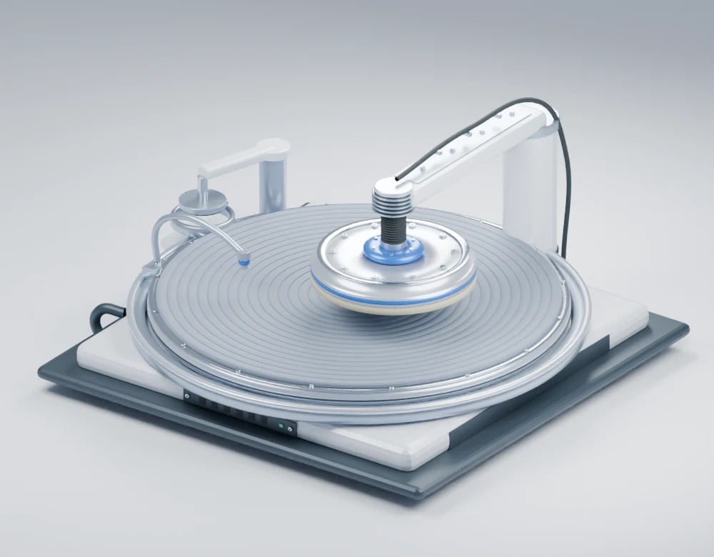

ORDER 01 / 05 · 첫 납품
잘 깎는 것보다,
딱 맞게 깎는 것.
가상의 주문을 맡고, 측정과 시간을 판단해 납품하세요.
추가 행동2 / 2회
가공 진행0 / 6
운영 자금100 P
- 01 주문 확인
- 02 시간 설정 · 연마
- 03 측정 판단
- 04 검사 · 납품
측정·정비 공통 2회 · 가공과 최종 검사는 횟수를 쓰지 않습니다.
주문서 다시 보기
딩동! 손님이 찾아왔어요.
CMP CELL 01 연마 작업대준비 완료
가압 헤드웨이퍼 뒷면 ↑앞면 · 연마층 ↓연마 패드슬러리 공급컨디셔너 · 대기
입체 장비를 준비하고 있습니다.
관찰 도구 단면 · 부품 설명
장비 개념도

대기 트레이 6→연마기 준비→보관 슬롯 0계측기 ↗
컨디셔너 사용량
패드 사용량
사용량·마모는 게임 가정. 3D는 동작 설명이며 실제 제거량을 표시하지 않습니다.
투입 슬롯의 맨 위 웨이퍼를 연마 패드로 끌어 놓으세요.
연마가 끝났어요.
겉모습만으로는 정확한 제거량을 알 수 없어요.
계측기로 이동 중스캔이 끝나면 이번 장의 결과를 공개해요.
웨이퍼를 보낼 곳으로 옮기세요.
장비 상태사용량 변화를 확인하세요.
검사 기록 비교 · CSV
전체 수치 보기
결과 해설
직전 도전과 비교